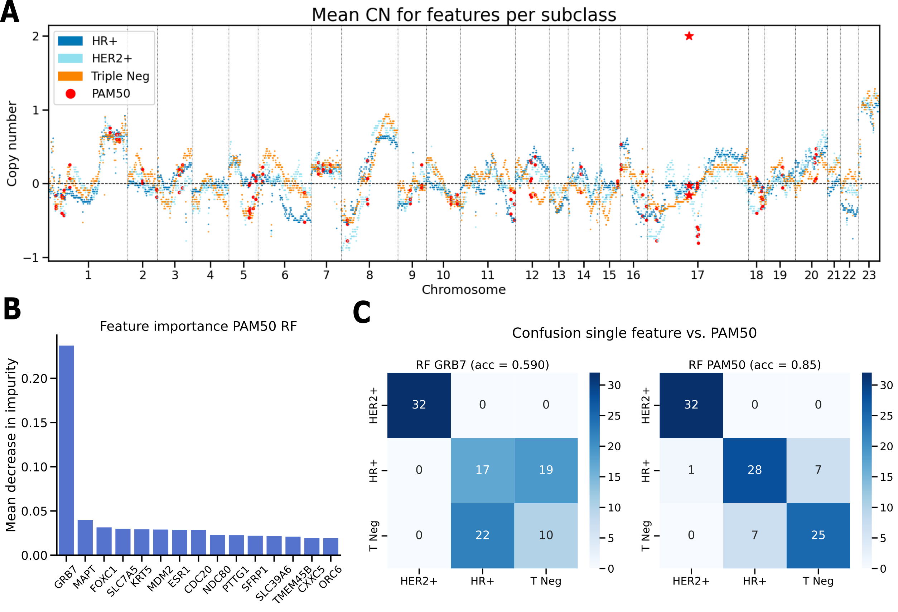

Projects
Classifying Breast Cancer Subtypes via Biologically Reasoned Feature Selection in Random Forest
In this project, we investigated how different feature-selection methods influence the classification of HER2+, HR+, and triple-negative breast cancer subtypes. Classification performance was evaluated using Random Forest models within a repeated nested cross-validation framework.
The best-performing approach combined PAM50-overlapping regions with Elastic Net-selected features, achieving an accuracy of 0.84 ± 0.067. PAM50-overlapping regions alone achieved 0.82 ± 0.077, outperforming ANOVA-selected features (0.73 ± 0.087), Random Forest-based feature selection (0.70 ± 0.045), and the full-feature baseline (0.67 ± 0.092).

Project Title Two
A short description of your second project goes here.

Project Title Three
A short description of your third project goes here.